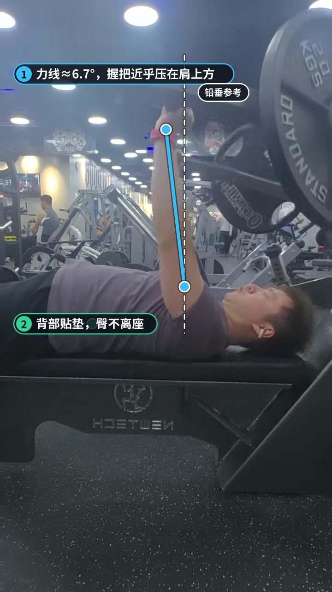
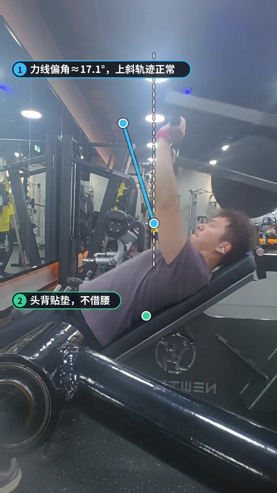
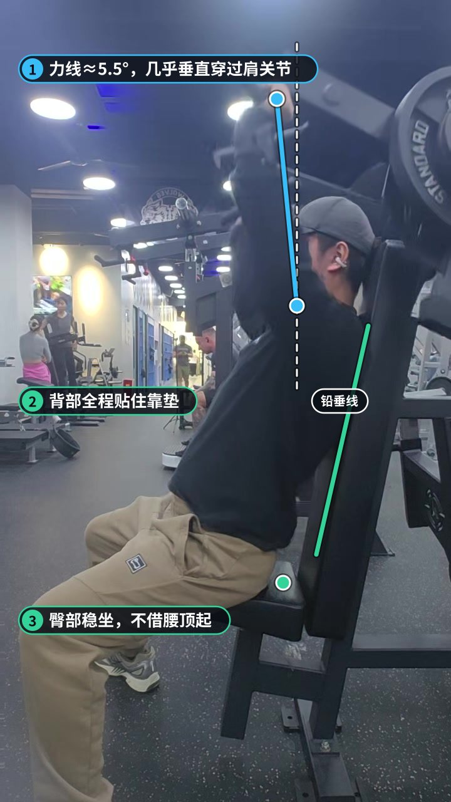

每条训练视频都会逐帧复盘，标出力线、问题和做得好的地方。同一个动作的关键角度和节奏会连成趋势线，进步是看得见的。
最近一次：幅度到位、背部贴实；连续组离心偏快，底部休息偏久
只有一条记录，趋势线会在下一次训练后出现。

最近一次：上斜推胸幅度深、贴垫稳；中途松手一次，离心整体偏快

最近一次：躯干稳、顶端力线正；下放偏浅偏快，最后一次砸回

趋势对比靠的是角度。机位越一致，前后两次越有可比性。